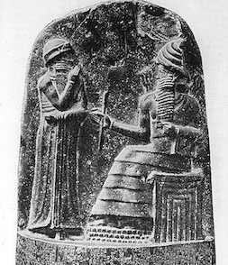
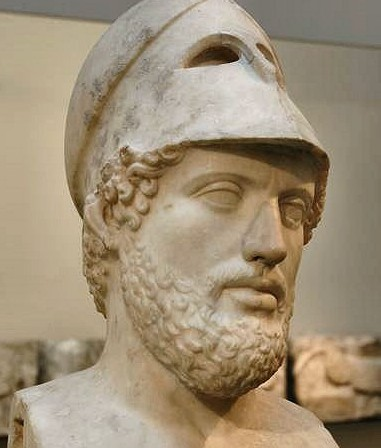
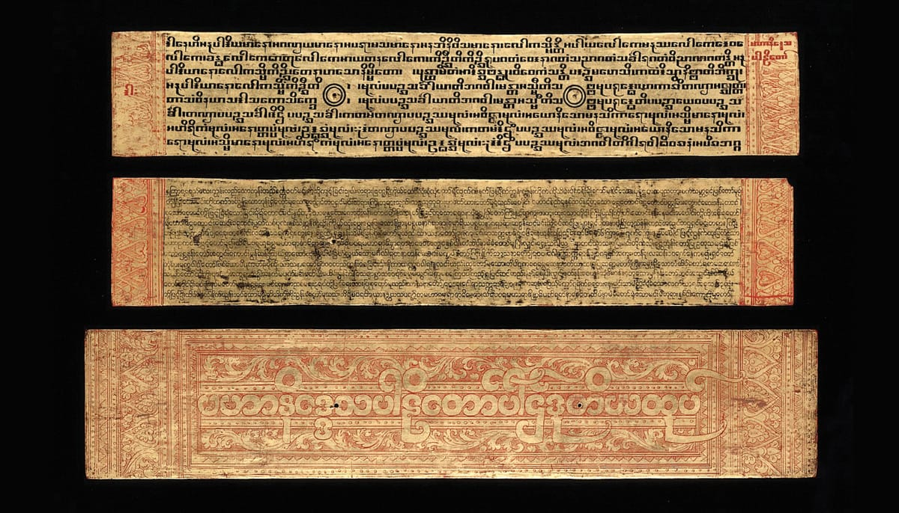
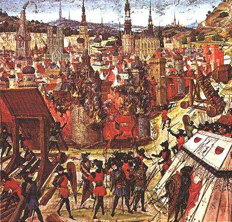

- 3100-2850 BCE
- 1792-1750 BCE
- 18th-15th Century BCE
- 800-500 BCE
- 6th Century BCE
- 551-479 BCE
- 509-44 BCE
- 479-431 BCE
- 469-391 BCE
- 451-449 BCE
- 300 BCE
- 262-232 BCE
- 45-44 BCE
- 27 BCE-476 CE
- 30 CE
- 1st Century CE
- 6th Century CE
- 1096-1204 CE
- 1215 CE
-
3100-2850 BCE
Menes, the first Pharaoh of the Egyptian dynasty, establishes codes of conduct for the Egyptian civilization.
The Cartouche of Menes
Abydos_Königsliste_06.jpg: https://creativecommons.org/licenses/by/3.0 -

1792-1750 BCE
Babylonian King Hammurabi issues the first written law code, the Code of Hammurabi, based on revelation from Shamash, the god of justice.
The Cartouche of Menes
Abydos_Königsliste_06.jpg: https://creativecommons.org/licenses/by/3.0 -

18th-15th Century BCE
The Five Books of Moses emerge, creating the foundation of the Jewish faith, The Torah. The Torah contains themes including common concern for the welfare and rights of others. Furthermore, the Ten Commandments establish a code of conduct toward others.
The Cartouche of Menes
Abydos_Königsliste_06.jpg: https://creativecommons.org/licenses/by/3.0 -

800-500 BCE
The Upanishads are written outlining the Vedic beliefs in the relationship between the individual soul, ultimate truth, and Karma as well as the belief that individual actions have ongoing moral consequences.
The Cartouche of Menes
Abydos_Königsliste_06.jpg: https://creativecommons.org/licenses/by/3.0 -
6th Century BCE
Cyrus the Great, King of the Medes and the Persians, issues the "Charter of Freedom of Mankind." It is considered the first charter of human rights.
The Cartouche of Menes
Abydos_Königsliste_06.jpg: https://creativecommons.org/licenses/by/3.0 -

551-479 BCE
K'ung Fu Tzu (pronounced Confucius in English) establishes the dominant moral and political philosophy in China, Confucianism. The highest Confucian virtue "Jen" is described by Confucius as the principle "to love all men."
The Cartouche of Menes
Abydos_Königsliste_06.jpg: https://creativecommons.org/licenses/by/3.0 -
509-44 BCE
Rome flourishes under a Republic. Roman values under the Republic emphasize selfless service to the community, individual honor, the necessity of the law, and shared power and decision making. The Roman Republic develops a representative government along with a judicial system. Both the Roman form of government and the Roman form of law become the basis for many later European legal codes still in use today. The Republic ends in 44 BCE when, after civil war, Julius Caesar is named Emperor for life.
The Cartouche of Menes
Abydos_Königsliste_06.jpg: https://creativecommons.org/licenses/by/3.0 -

479-431 BCE
A Golden Age takes place in Athens, under the leadership of Pericles. Athens experiments with Democracy in which there is widespread and direct participation by male citizens in the making of laws in the assembly on the basis of majority rule.
The Cartouche of Menes
Abydos_Königsliste_06.jpg: https://creativecommons.org/licenses/by/3.0 -
469-391 BCE
Chinese philosopher Mo-Zi expands on Confucian principles and advances the philosophy of "universal love" as a guiding principle of life. Because no benefit comes from destruction, Mo-Zi discourages large states from attacking smaller states.
The Cartouche of Menes
Abydos_Königsliste_06.jpg: https://creativecommons.org/licenses/by/3.0 -

451-449 BCE
The Twelve Tables, the Roman Republic's earliest attempt at a code of law, are created in order to prevent patrician public officials, who adjudicated most legal matters, from adjudicating the law based on their own preferences. The Twelve Tables become such a symbol of Roman justice that children are required to memorize them for the next four hundred years.
The Cartouche of Menes
Abydos_Königsliste_06.jpg: https://creativecommons.org/licenses/by/3.0 -

300 BCE
The Four Vedas, the primary texts of Hinduism, are recorded. These had been codified around 600 BCE, although the teachings pre-date that era. They establish a spiritual precedent found in later religions.
The Cartouche of Menes
Abydos_Königsliste_06.jpg: https://creativecommons.org/licenses/by/3.0 -
262-232 BCE
King Asoka of India issues his Edicts, emphasizing goodness, kindness and generosity.
The Cartouche of Menes
Abydos_Königsliste_06.jpg: https://creativecommons.org/licenses/by/3.0 -
45-44 BCE
Cicero writes his philosophical works on humanitas, which emphasize goodwill towards humanity.
The Cartouche of Menes
Abydos_Königsliste_06.jpg: https://creativecommons.org/licenses/by/3.0 -

27 BCE-476 CE
The Roman Empire develops natural law and the rights of citizens.
The Cartouche of Menes
Abydos_Königsliste_06.jpg: https://creativecommons.org/licenses/by/3.0 -
30 CE
Jesus of Nazareth, the central figure of the Christian faith, preaches virtues of "love thy neighbor as thyself" and for those without sin to "cast the first stone."
The Cartouche of Menes
Abydos_Königsliste_06.jpg: https://creativecommons.org/licenses/by/3.0 -

1st Century CE
The Tripitaka, the sacred texts of Buddhism, is transferred from oral to written tradition, establishing Buddhist community codes of conduct to maintain a harmonious spiritual community.
The Cartouche of Menes
Abydos_Königsliste_06.jpg: https://creativecommons.org/licenses/by/3.0 -
6th Century CE
The teachings of Muhammad are outlined in the Qur'an, which emphasizes racial and religous tolerance, charity and equality.
The Cartouche of Menes
Abydos_Königsliste_06.jpg: https://creativecommons.org/licenses/by/3.0 -

1096-1204 CE
Pope Urban II launches the First Crusade to wrest the Holy Land from the Seljuk Turks. Subsequent crusades follow. The Crusades represent the first incident of European Imperialism.
The Cartouche of Menes
Abydos_Königsliste_06.jpg: https://creativecommons.org/licenses/by/3.0 -
1215 CE
After England suffers a defeat at the Battle of Bouvines, English Barons rebel against King John and force him to sign the Magna Carta. The charter established that all free men had certain rights that even the king could not violate.
The Cartouche of Menes
Abydos_Königsliste_06.jpg: https://creativecommons.org/licenses/by/3.0
{kind=link}